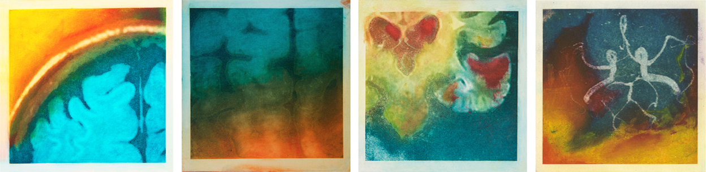

Elizabeth Jameson,
Elizabeth Jameson Fine Art Studio
, San Francisco, CA
-
Oxford University, Bachelor of Philosophy • 1966 – 69
-
University of Pittsburg, Master of Arts • 1965 – 66
-
University of British Columbia, Bachelor of Arts • 1961 – 65
-
Professor Emerita, UCSD • 2013 – Current
-
President’s Professor of Philosophy,
University of California • 1999 – 2013
-
Adjunct Professor,
Salk Institute • 1989 – Current
-
Full Professor, UCSD • 1984 – Current
-
Full Professor, University of Manitoba • 1983 – 84
-
Visiting Member, Institute for Advanced Study,
Princeton • 1982 – 83
-
Associate Professor, University of Manitoba
• 1977 – 82
-
Assistant Professor, University of Manitoba • 1969 – 77
-
Dana Alliance for Brain Initiatives • 2003 – Current
-
Board of Advisors,
Swartz Center for Computational Neuroscience,
UCSD • 2000 – Current
-
Chair,
Executive Board, Institute for Neural Computation,
UCSD • 1994 – Current
-
President,
American Philosophical Association – Pacific Division •
1992 – 93
-
Board of Governors,
Philosophy of Science Association • 1985 – 87
-
President,
Society for Philosophy and Psychology • 1984 – 85
-
Program Committee,
Philosophy of Science Association • 1984
-
Board of Governors,
Canadian Philosophical Association • 1978 – 80
-
Society for Neuroscience
-
Philosophy of Science Association
-
American Philosophical Association
-
Society for Philosophy and Psychology